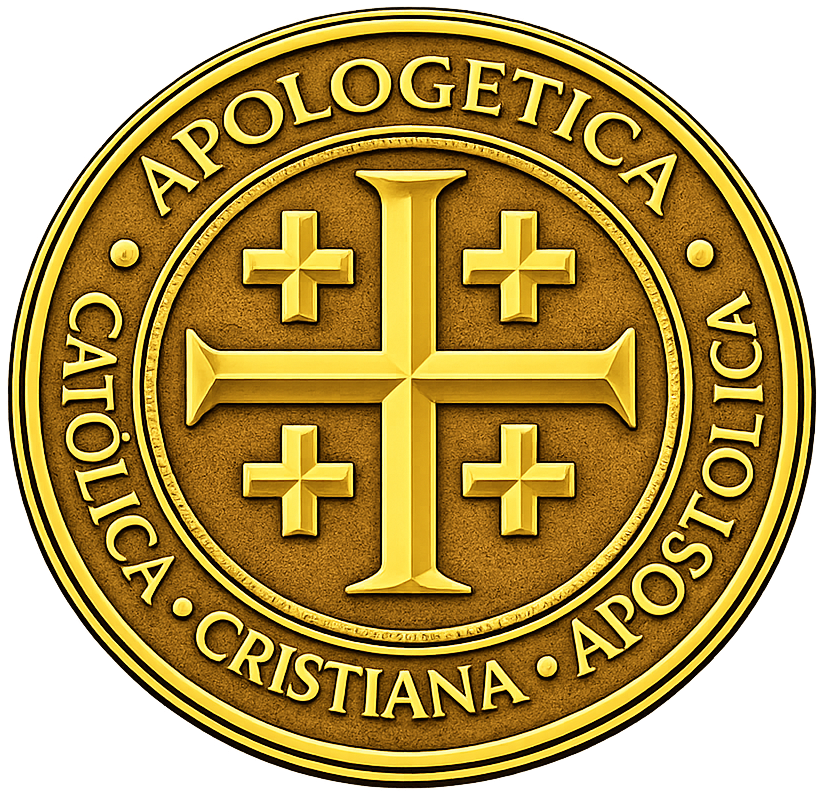

Análisis canónico y litúrgico para la defensa del altar, el decoro de la Santa Eucaristía y la corrección de abusos.
Análisis y denuncia sobre la purificación y traslado indebido de vasos sagrados por fieles laicos no instituidos.
Leer Documento ➔Análisis y denuncia sobre la delegación ilícita del traslado y reserva de la Eucaristía en el Sagrario por ministros extraordinarios.
Leer Documento ➔Análisis y amonestación por la celebración del Santo Sacrificio revistiendo únicamente alba y estola.
Leer Documento ➔Durante o inmediatamente después de la distribución de la Sagrada Comunión, un fiel laico (monaguillo o servidor del altar ordinario) sin haber recibido la institución formal del acolitado, retira del altar y traslada a la sacristía los vasos sagrados (cáliz, patena, palia y corporal). Estos recipientes son manipulados sin haber sido purificados previamente en el altar por un ministro ordenado, conteniendo aún restos líquidos de la Preciosísima Sangre o fragmentos del Cuerpo de Cristo, lo que representa un peligro inminente de profanación accidental.
La práctica descrita es un abuso litúrgico manifiesto que contraviene directamente las disposiciones de la Iglesia.
Instrucciones de uso: Entregar esta misiva de forma física en la oficina parroquial, solicitando acuse de recibo, o enviarla por correo electrónico oficial al Párroco.
El acto por el cual un presbítero celebrante, sin mediar causa de fuerza mayor, enfermedad o impedimento físico real, delega el traslado y la reserva del Santísimo Sacramento en el Sagrario a un laico (Ministro Extraordinario de la Sagrada Comunión) constituye un abuso litúrgico manifiesto. Este proceder difumina la naturaleza del ministerio sacerdotal, convirtiendo un acto de máxima reverencia sacramental en un mero trámite logístico y permitiendo que un laico asuma roles que el orden sagrado no le confiere.
Instrucciones de uso: Entregar esta misiva de forma física en la oficina parroquial, solicitando acuse de recibo, o enviarla por correo electrónico oficial al Párroco.
El acto por el cual un presbítero celebra la Santa Misa revistiendo únicamente alba y estola, sin que medie una causa de fuerza mayor verdaderamente absoluta, constituye una infracción directa a las leyes litúrgicas universales. Esta práctica despoja al rito de su sacralidad visible, banaliza el ministerio sacerdotal y convierte la celebración de los sagrados misterios en un acto sometido al capricho personal del celebrante, lesionando el decoro y la reverencia que exige la Casa de Dios.
La responsabilidad recae única y absolutamente sobre el Presbítero Celebrante. Ningún cargo, ya sea Párroco o Vicario Episcopal, otorga inmunidad frente a las rúbricas del Misal Romano; a mayor dignidad, mayor es la obligación moral de dar un testimonio intachable de obediencia. Al celebrar sin casulla por comodidad, el sacerdote deforma la liturgia, escandaliza a los fieles y falta gravemente a las promesas de obediencia y reverencia de su Ordenación.
Instrucciones de uso: Entregar esta misiva de forma física en la oficina parroquial, solicitando acuse de recibo, o enviarla por correo electrónico oficial al Sacerdote y a la Diócesis.